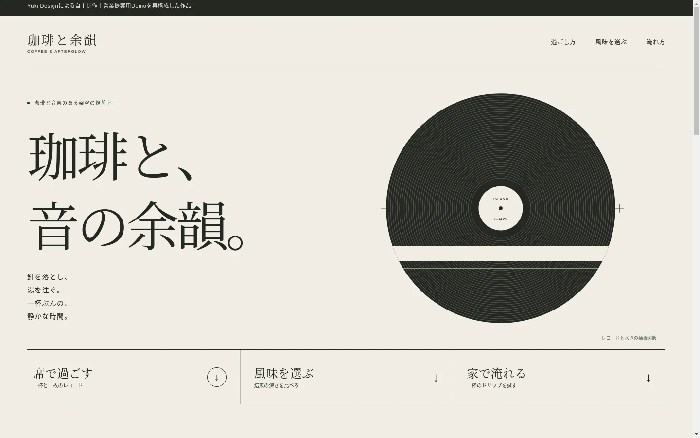
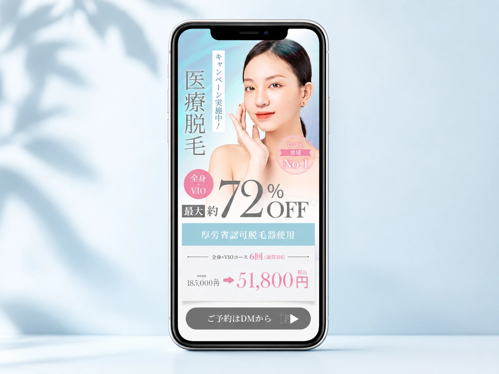
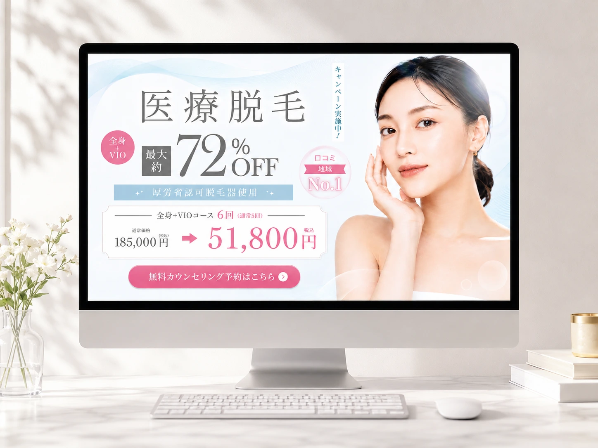
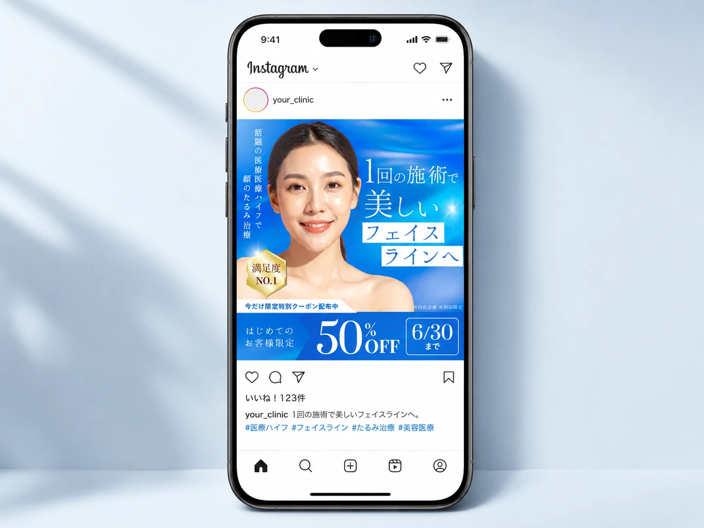
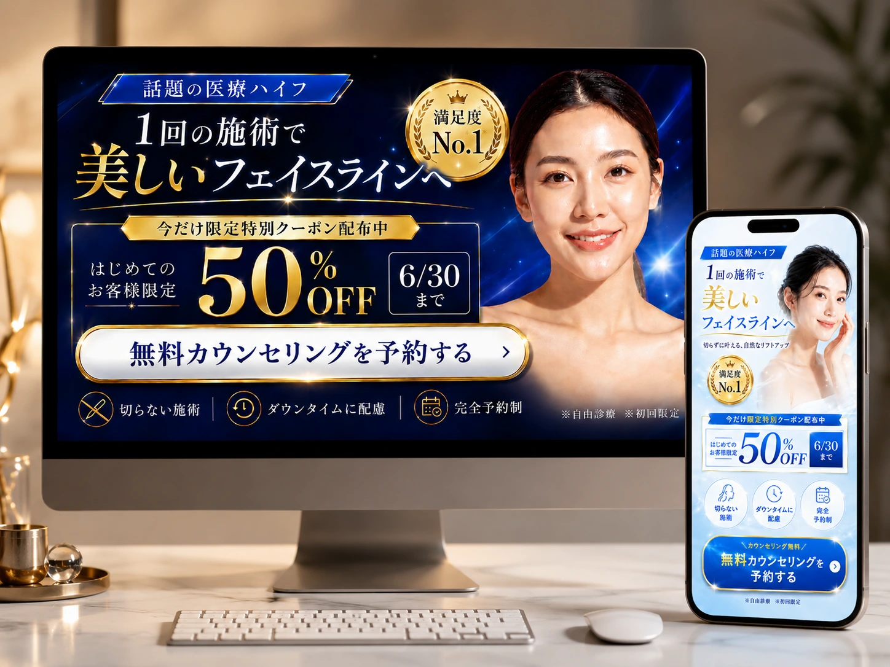
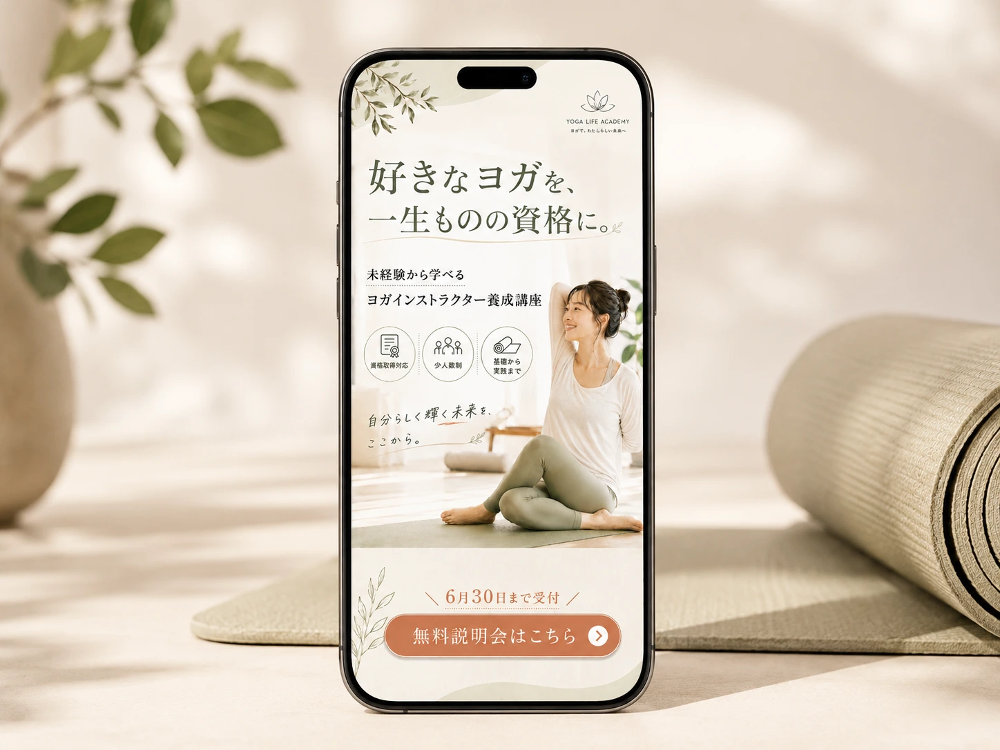
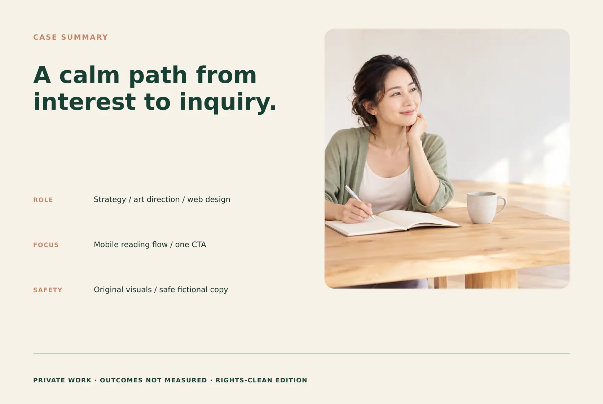
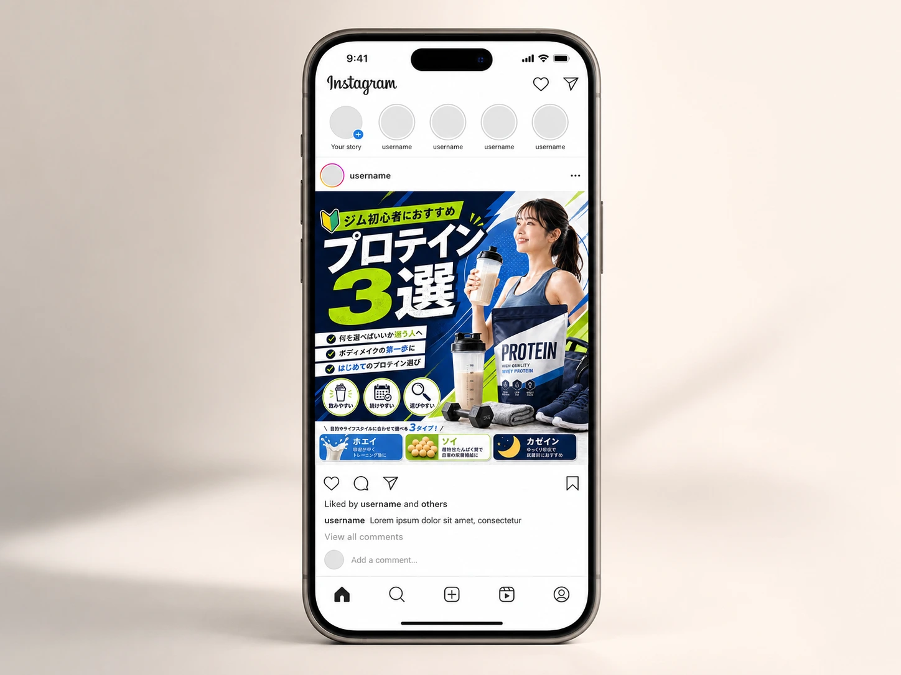
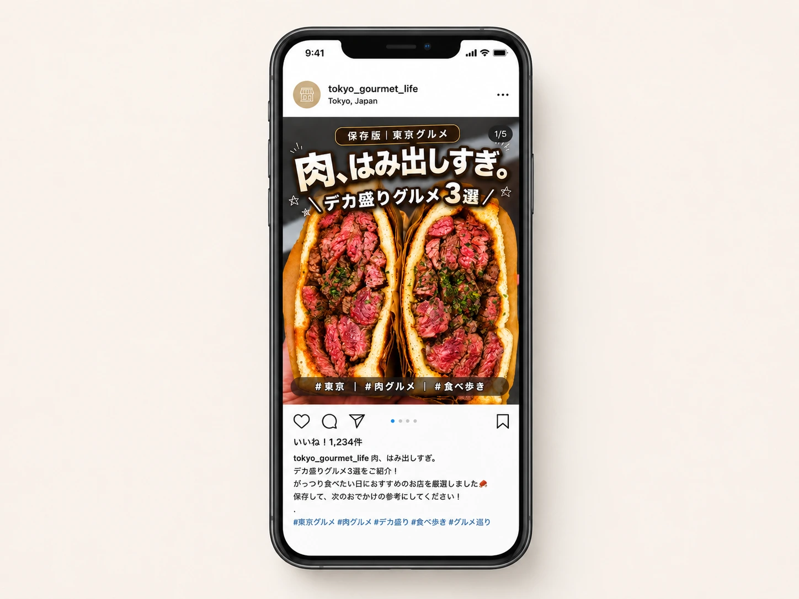

YUKI DESIGN / REN YUKI
想いと魅力を、
伝わるデザインに。
Webサイト・LP・バナー・SNS画像。
伝えたいことを整理し、次の行動につながる
デザインをつくります。
Web / LPBanner / SNSInformation Design
Works
制作実績・自主制作
SELECTED WEB WORKS
世界観と、使いやすさ。
画面の先まで体験できる、3つのWeb作品。
More works
LP・バナー・SNSの制作例

自主制作
医療脱毛 キャンペーンバナー
医療・クリニック / バナー / 2026
美容医療の信頼感とお得感を両立させ、行動を促すキャンペーンバナーデザイン。価格や特典が伝わりやすいよう情報を整理し、予約への導線を意識しました。
VIEW DETAIL →
自主制作
医療脱毛 LPデザイン
医療・クリニック / LP / 2026
医療脱毛の魅力と安心感を伝え、無料カウンセリングの予約獲得を目的に設計したLPデザイン。悩みから予約までを自然につなげました。
VIEW DETAIL →
自主制作
医療ハイフ バナー制作
美容・クリニック / バナー / 2026
医療ハイフの魅力と安心感を伝え、来院のきっかけをつくるバナーデザイン。施術の魅力と限定感をひと目で伝わる構成にしました。
VIEW DETAIL →
自主制作
医療ハイフ LPデザイン
美容・クリニック / LP / 2026
医療ハイフの魅力と安心感を伝え、無料カウンセリングの予約へつなげるLPデザイン。悩みから予約までを自然につなげる構成にしました。
VIEW DETAIL →
自主制作
ヨガ講座 ストーリーバナー
スクール・ヨガ / バナー / 2026
ヨガのやさしい世界観を活かし、無料説明会への参加を促すストーリーバナーデザイン。学びへの前向きな気持ちを表現しました。
VIEW DETAIL →
自主制作
ヨガサービス LPデザイン
スクール・ヨガ / LP / 2026
情報量の多い学習サービスを読みやすく整理し、相談へ自然につなげる自主制作LP。オリジナル生成画像と自作図形で再構成しました。
VIEW DETAIL →
クライアントワーク
プロテイン3選 Instagramバナー
健康・フィットネス / バナー / 2026
筋トレ初心者に向けて、ホエイ・ソイ・カゼインの3種を分かりやすく整理したInstagramバナー。「自分に合う一本」を選べる構成で、保存したくなる訴求を意識しました。
VIEW DETAIL →
クライアントワーク
飲食店 Instagram投稿デザイン
飲食・グルメ / SNS投稿 / 2026
ステーキサンドの迫力を活かした、飲食店アカウント向けの投稿デザイン。一瞬で手を止めさせる文字組みで、「保存したい・行きたい」につながる設計にしました。
VIEW DETAIL →Design Approach
大切にしていること
情報設計
伝えたい内容をただ並べるのではなく、見る人が迷わず理解できる順番へ整理します。サービスの魅力や必要な情報が自然に届くよう、目的に合わせた構成づくりを大切にしています。
訴求設計
ユーザーの悩みや期待を想定し、行動につながる見せ方を考えます。価格・特徴・ベネフィットなどの情報に優先順位をつけ、申し込みや問い合わせにつながる導線を設計します。
視覚表現
業界やサービスの世界観に合わせて、配色・写真・余白・文字の見せ方を調整します。美容・医療・教育など、信頼感が求められる分野でも安心して見られる、清潔感のあるデザインを心がけています。
About
わたしについて
Webデザイナーの遊喜 蓮です。30代未経験から独学でWebデザインを学び、現在はIT企業の正社員として、イベント画像や事業の画像制作・デザイン担当を務めています。
自分自身の「生活習慣の改善」によって健康や美容のアプローチが変わり、人生がよくなった経験から、世の中にある「本当に良いサービスや商品」を、もっと多くの人に体験してほしい。その魅力をデザインの力で最大化し、必要な消費者のもとへ届けたいという想いからデザイン制作を行なっております。
これまでに美容師や人材派遣の営業、海外（オーストラリア）でのワーキングホリデーなど、多様な環境で多くの人と関わってきました。この経験から、相手のニーズを汲み取る力と、柔軟なコミュニケーションには自信があります。
CanvaやPhotoshop、Illustratorを活用し、現在はITの現場でAI活用や効率的な制作を追求しており、見た目の美しさだけでなく、成果につながるスピード感のあるデザインを心がけています。クライアント様の想いに寄り添いながら、売上や集客への貢献につながる制作を丁寧に行います。
SKILLS スキル
DESIGN
- Web Design
- Graphic Design
TOOLS
- Canva
- Photoshop
- Illustrator
CODING
- HTML / CSS
- Studio / WordPress
OTHERS
- 企画・構成
- 情報設計
- ライティング
Contact
お問い合わせ
つくりたいものを、
一緒にかたちに。
Web・LP・バナー・SNS画像の制作をご相談いただけます。
ご相談内容、希望の時期、参考イメージなどをお聞かせください。
正式なご依頼・お支払いは、内容に応じて
ココナラ・クラウドワークス経由にも対応しています。